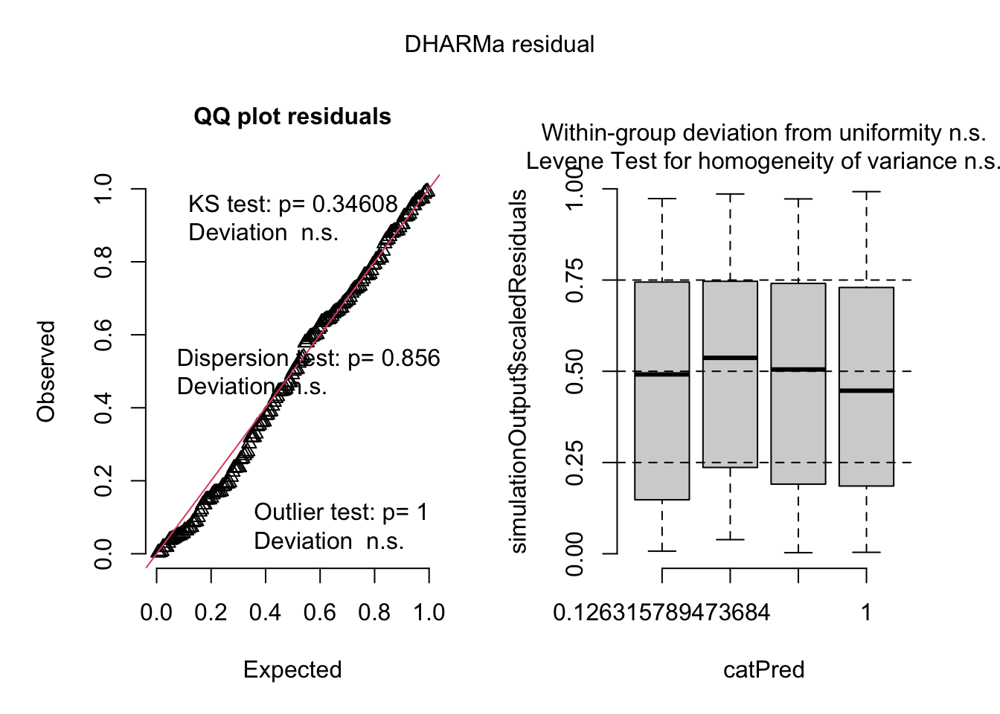
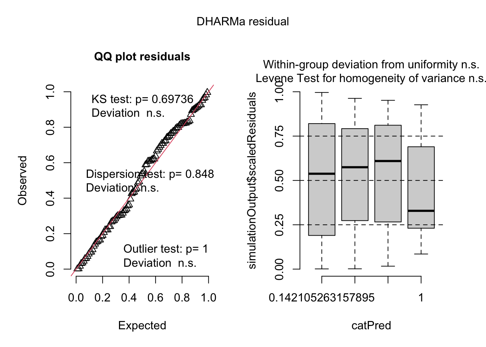
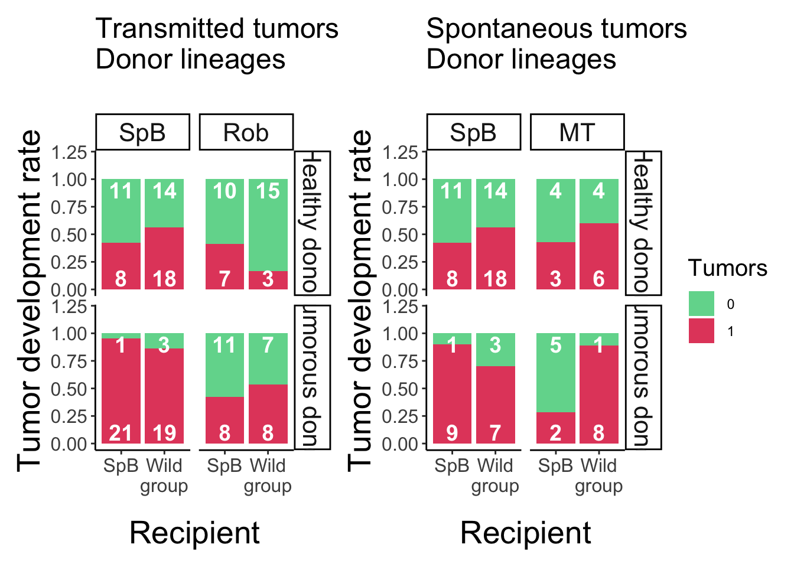

m1 <- glmmTMB(data=donor_trans, Tumors ~ donor * donor_status + receiver + (1|lot) + (1|date_draft), family = binomial, REML = T)
m2 <- glmmTMB(data=donor_trans, Tumors ~ donor * donor_status + receiver + (1|date_draft/lot), family = binomial, REML = T)
m3 <- glmmTMB(data=donor_trans, Tumors ~ donor * donor_status + receiver + (1|lot), family = binomial, REML = T)
m4 <- glmmTMB(data=donor_trans, Tumors ~ donor * donor_status + receiver + (1|date_draft), family = binomial, REML = T)
m5 <- glmmTMB(data=donor_trans, Tumors ~ donor * donor_status + receiver, family = binomial, REML = T)
AICc(m1, m2, m3, m4, m5) ## df AICc
## m1 7 201.3000
## m2 7 201.3000
## m3 6 199.1171
## m4 6 199.2866
## m5 5 197.5273
There is no need to include any of the potential random effects that
have been measured.
m1 <- glmmTMB(data=donor_trans, Tumors ~ donor * donor_status * receiver, family = binomial, REML = F)
m2 <- glmmTMB(data=donor_trans, Tumors ~ donor * donor_status + receiver, family = binomial, REML = F)
m3 <- glmmTMB(data=donor_trans, Tumors ~ donor + donor_status * receiver, family = binomial, REML = F)
m4 <- glmmTMB(data=donor_trans, Tumors ~ donor * receiver + donor_status, family = binomial, REML = F)
m5 <- glmmTMB(data=donor_trans, Tumors ~ donor + donor_status + receiver, family = binomial, REML = F)
m6 <- glmmTMB(data=donor_trans, Tumors ~ donor + donor_status, family = binomial, REML = F)
m7 <- glmmTMB(data=donor_trans, Tumors ~ donor + receiver, family = binomial, REML = F)
m8 <- glmmTMB(data=donor_trans, Tumors ~ donor_status + receiver, family = binomial, REML = F)
m9 <- glmmTMB(data=donor_trans, Tumors ~ donor * donor_status, family = binomial, REML = F)
m10 <- glmmTMB(data=donor_trans, Tumors ~ donor * receiver, family = binomial, REML = F)
m11 <- glmmTMB(data=donor_trans, Tumors ~ donor_status * receiver, family = binomial, REML = F)
m12 <- glmmTMB(data=donor_trans, Tumors ~ donor, family = binomial, REML = F)
m13 <- glmmTMB(data=donor_trans, Tumors ~ donor_status, family = binomial, REML = F)
m14 <- glmmTMB(data=donor_trans, Tumors ~ receiver, family = binomial, REML = F)
m15 <- glmmTMB(data=donor_trans, Tumors ~ 1, family = binomial, REML = F)
AICc(m1, m2, m3, m4, m5, m6, m7, m8, m9, m10, m11, m12, m13, m14, m15)## df AICc
## m1 8 198.1611
## m2 5 196.7301
## m3 5 200.3366
## m4 5 200.1467
## m5 4 198.2827
## m6 3 196.2356
## m7 3 214.0467
## m8 3 215.8551
## m9 4 194.6361
## m10 4 216.0085
## m11 4 217.9357
## m12 2 212.3960
## m13 2 213.8079
## m14 2 228.9173
## m15 1 226.9319
| Tumors | Tumors | |||||
|---|---|---|---|---|---|---|
| Predictors | Odds Ratios | CI | p | Odds Ratios | CI | p |
| donor [Rob] | 0.38 | 0.15 – 0.96 | 0.041 | 0.21 | 0.10 – 0.44 | <0.001 |
| donor status [T] | 9.62 | 3.00 – 30.83 | <0.001 | 4.47 | 2.17 – 9.22 | <0.001 |
|
donor [Rob] × donor status [T] |
0.23 | 0.05 – 1.07 | 0.061 | |||
| Observations | 164 | 164 | ||||
simulateResiduals(m9, plot=T)
Final model results:
m9 <- glmmTMB(data=donor_trans, Tumors ~ donor * donor_status, family = binomial, REML = T)
tab_model(m9, show.intercept = F, show.r2 = F,show.re.var = F)| Tumors | |||
|---|---|---|---|
| Predictors | Odds Ratios | CI | p |
| donor [Rob] | 0.38 | 0.15 – 0.96 | 0.041 |
| donor status [T] | 9.62 | 3.00 – 30.83 | <0.001 |
|
donor [Rob] × donor status [T] |
0.23 | 0.05 – 1.07 | 0.061 |
| Observations | 164 | ||
There is an slightly significant effect of the status of the donor, with individuals grafted with Robusta tissues developing less tumors than healthy one. And a strong effect of the donor status, with 10,4 % (IRR of 9,62) more chances to develop tumors when the giver hydra is tumorous. Maybe a small interaction but not enough power to be sure.
m1 <- glmmTMB(data=donor_spont, Tumors ~ donor + receiver + donor_status + (1|lot) + (1|date_draft), family = binomial, REML = T)
m2 <- glmmTMB(data=donor_spont, Tumors ~ donor + donor_status + receiver + (1|date_draft/lot), family = binomial, REML = T)
m3 <- glmmTMB(data=donor_spont, Tumors ~ donor + donor_status + receiver + (1|lot), family = binomial, REML = T)
m4 <- glmmTMB(data=donor_spont, Tumors ~ donor + donor_status + receiver + (1|date_draft), family = binomial, REML = T)
m5 <- glmmTMB(data=donor_spont, Tumors ~ donor + donor_status + receiver, family = binomial, REML = T)
AICc(m1, m2, m3, m4, m5) ## df AICc
## m1 6 147.4359
## m2 6 147.4359
## m3 5 145.1822
## m4 5 145.2685
## m5 4 143.2151
There is no need to include any of the potential random effects that
have been measured.
m1 <- glmmTMB(data=donor_spont, Tumors ~ donor * donor_status * receiver, family = binomial, REML = F)
m2 <- glmmTMB(data=donor_spont, Tumors ~ donor * donor_status + receiver, family = binomial, REML = F)
m3 <- glmmTMB(data=donor_spont, Tumors ~ donor * receiver + donor_status, family = binomial, REML = F)
m4 <- glmmTMB(data=donor_spont, Tumors ~ donor + receiver * donor_status, family = binomial, REML = F)
m5 <- glmmTMB(data=donor_spont, Tumors ~ donor + donor_status + receiver, family = binomial, REML = F)
m6 <- glmmTMB(data=donor_spont, Tumors ~ donor + donor_status, family = binomial, REML = F)
m7 <- glmmTMB(data=donor_spont, Tumors ~ donor + receiver, family = binomial, REML = F)
m8 <- glmmTMB(data=donor_spont, Tumors ~ donor_status + receiver, family = binomial, REML = F)
m9 <- glmmTMB(data=donor_spont, Tumors ~ donor * donor_status, family = binomial, REML = F)
m10 <- glmmTMB(data=donor_spont, Tumors ~ donor * receiver, family = binomial, REML = F)
m11 <- glmmTMB(data=donor_spont, Tumors ~ donor_status * receiver, family = binomial, REML = F)
m12 <- glmmTMB(data=donor_spont, Tumors ~ donor, family = binomial, REML = F)
m13 <- glmmTMB(data=donor_spont, Tumors ~ donor_status, family = binomial, REML = F)
m14 <- glmmTMB(data=donor_spont, Tumors ~ receiver, family = binomial, REML = F)
m15 <- glmmTMB(data=donor_spont, Tumors ~ 1, family = binomial, REML = F)
AICc(m1, m2, m3, m4, m5, m6, m7, m8, m9, m10, m11, m12, m13, m14, m15)## df AICc
## m1 8 143.6345
## m2 5 143.5008
## m3 5 141.6417
## m4 5 144.6793
## m5 4 142.4959
## m6 3 142.6471
## m7 3 145.5724
## m8 3 140.6781
## m9 4 143.7797
## m10 4 144.5813
## m11 4 142.8254
## m12 2 145.1392
## m13 2 140.8686
## m14 2 143.4691
## m15 1 143.0827| Tumors | Tumors | Tumors | Tumors | Tumors | |||||||||||
|---|---|---|---|---|---|---|---|---|---|---|---|---|---|---|---|
| Predictors | Odds Ratios | CI | p | Odds Ratios | CI | p | Odds Ratios | CI | p | Odds Ratios | CI | p | Odds Ratios | CI | p |
| donor status [T] | 2.65 | 1.09 – 6.46 | 0.032 | 2.45 | 1.03 – 5.86 | 0.044 | 2.85 | 1.11 – 7.31 | 0.029 | 2.61 | 0.73 – 9.33 | 0.140 | 2.59 | 1.06 – 6.33 | 0.037 |
| receiver [TV] | 1.89 | 0.83 – 4.29 | 0.131 | 1.16 | 0.43 – 3.12 | 0.770 | 1.81 | 0.67 – 4.87 | 0.242 | ||||||
| donor [MT] | 0.31 | 0.08 – 1.25 | 0.099 | 0.76 | 0.31 – 1.86 | 0.552 | 0.77 | 0.32 – 1.85 | 0.559 | ||||||
|
donor [MT] × receiver [TV] |
4.97 | 0.80 – 30.98 | 0.086 | ||||||||||||
|
receiver [TV] × donor status [T] |
1.15 | 0.19 – 6.91 | 0.875 | ||||||||||||
| Observations | 104 | 104 | 104 | 104 | 104 | ||||||||||

m13 <- glmmTMB(data=donor_spont, Tumors ~ donor_status, family = binomial, REML = T)
tab_model(m13, show.intercept = F, show.r2 = F,show.re.var = F) | Tumors | |||
|---|---|---|---|
| Predictors | Odds Ratios | CI | p |
| donor status [T] | 2.45 | 1.03 – 5.86 | 0.044 |
| Observations | 104 | ||
There is a small but significant effect of the status of the donor, the tumorous donors triggers twice and half more tumors in there grafted host.
